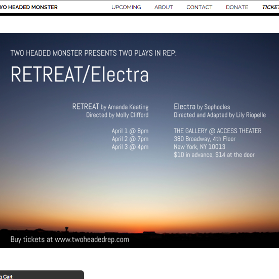

A LITTLE ABOUT ME
As a left-brain/right-brain hybrid (think mathlete/theatre kid), I never thought I'd find a field that challenged me technically and creatively. I grew up dreading the day when I'd need to give up one of my passions. Luckily, I discovered programming, and fell in love with its perfect balance of logic and creativity.
Until recently, I taught Full-Stack Web Development at App Academy NYC. At the moment, I'm consulting on several projects while spending the summer away from the city. When I'm not teaching or coding, I can usually be found consuming dangerous quantities of iced coffee and/or adventuring around my beautiful hometown, NYC.
MY FAVORITE TOOLS
SOME THINGS I'VE MADE
-
SmartCookie (Rails, Backbone.js, jQuery)
Check it out!
Collaborative recipe development platform with annotations inspired by Genius.
Backbone front end consumes a RESTful JSON API served up by Rails.
Gets start and end indices for annotations by reading DOM's selection object.
Supports nested and overlapping annotations. -
Asteroids (Javascript, HTML5 Canvas, jQuery)
Check it out!Everyone's favorite arcade classic, coded for the browser.
Randomly generates irregular polygonal asteroid geometry.
Uses trigonometry and transformational geometry to approximate physics and render objects. -
Mello (Rails, React/Flux)
Check it out!A project management tool with intuitive UI built with Rails and React.
React/Flux front-end consumes a JSON API served up by Rails for a seamless single-page user experience.
Uses ReactDnD to achieve fluid drag-and-drop user interactions. -
ActiveRecord Lite (Ruby)
Check it out!
Ruby ORM recreating the funtionality of Rails' ActiveRecord
Generates SQL queries based on naming conventions to replicate Rails associations.
Utilizes advanced Ruby language features, such as meta-programming and reflection. -
Static Sites! (React, HTML5, CSS3, jQuery, AWS)
Custom-Built Static Sites for All Occasions
When I'm not building web apps, I sometimes design and build static sites for individuals, events, and companies.
If you need a website, reach out for an up to date portfolio of my web design work.
GET IN TOUCH!
Feel free to email me at lilykriopelle (at) gmail (dot) com.